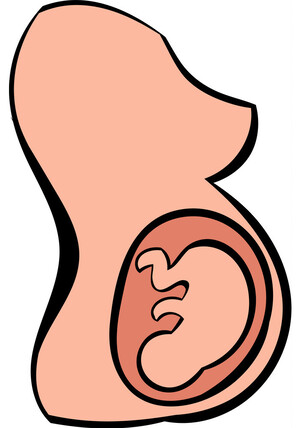

ⲛⲏϭⲉ S (once), ⲛⲉϫⲓ B nn f, belly, womb: Ge 3 14, Job 2 9, Ps 131 11 (S all ϩⲏ), Jon 2 1 (SA ϩⲏ). Mt 15 17 (S do, F ⲕⲁⲗⲁϩⲏ) κοιλία opp ⲟϯ μήτρα: Ps 21 10 κοι.; Job 3 10, Ps 16 14 (F ⲕⲁⲗ.), Tit 1 12 (all S do), P 44 70 = 43 41 S ⲑⲏ · ⲧⲛ. بطن γαστήρ; AM 327 who entered ⲑⲛ. of Virgin, MIE 2 387 child that ⲭⲏ ϧⲉⲛⲧⲉⲥⲛ. = BAp 111 S ⲛϩⲏⲧⲥ, EW 142 ⲑⲛ. ⲛⲟⲩⲥϩⲓⲙⲓ containing child (var RAl 88 ϧⲏⲧⲥ), Va 61 93 ⲧⲉϥⲛ. ⲛⲁⲧⲥⲓ, C 43 8 tore (his flesh) till bowels ⲓ ⲉⲃⲟⲗ ϧⲉⲛⲧⲉϥⲛ, P 55 13 ⲧⲛ. of ship ﺑ׳. ⲙⲟⲩϯ ⲉⲃⲟⲗ ϧⲉⲛⲑⲛ. ἐγγαστρίμυθος (εἶναι): Lev 20 6, Is 19 3 (both S do); In Ps 39 9 S BMOr 7561 37 (ed Maspero) has ϩⲛⲧⲙ[ⲏⲧⲉ, not ⲛ[ⲏϭⲉ. In place-names: PLond 4 179 Πατνεϫι, ϯⲡⲉⲧⲣⲁ ⲛⲕⲟⲩⲛⲛⲉϫⲓ, v ⲕⲟⲩⲛ⸗.
(noun female)
anatomy
belly, womb [μητρα, γαστηρ]

complete
247a
ⲛⲉϫⲓ B v ⲛⲏϭⲉ.
252a
See also:
| view | ϩⲏ SO ⳉⲉⲓ, ⳉⲓ A ϩⲏⲧ⸗ SL ⳉⲏⲧ⸗ A ϧⲏⲧ⸗ B ⲭⲏ⸗ O | (noun female) (B mostly ⲛⲉϫⲓ) belly, also womb [κοιλια, γαστηρ]2103 |
| view | ⲕⲁⲗⲁϩⲏ SF | (noun female) womb, prob ⲕⲁⲗⲁ + ϩⲏ (belly) [γαστηρ, κοιλια]2849 |
| view | ϣⲁϣⲡⲉ L ϣⲟϣⲡⲓ B | (noun female) stomach [στομαχος]2020 |
| view | ⲙⲁϩⲧ S ⲙⲁϧⲧ B ⲙⲉϩⲧ SF | (noun male) bowels, intestines [εντερα, σπλαγχνα, κοιλια]303 |